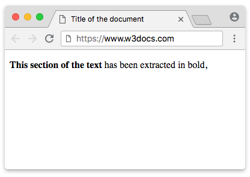

Elemento HTML "b"
O elemento "b" é usado em HTML para deixar um texto em negrito.
Ele serve para destacar partes importantes do conteúdo, sem adicionar significado semântico.
Exemplo:
"b" deixa um texto em negrito
Resultado: Este é um texto em negrito.
Imagem relacionada

Links úteis
Página do W3Schools sobre "b"
Artigo complementar sobre o elemento "b"